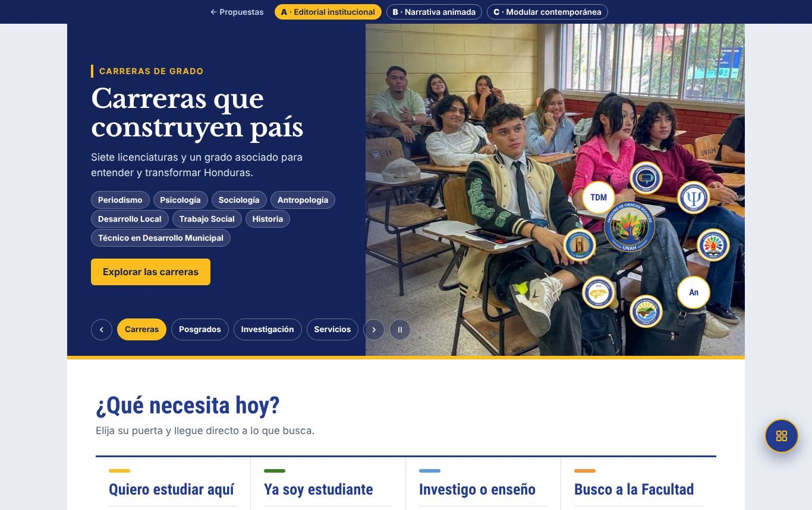
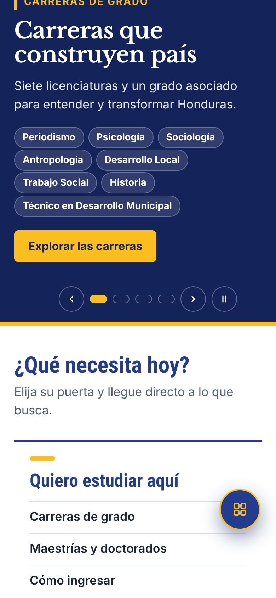

A · Editorial institucional
Sobria y editorial: azul y oro del manual UNAH, fotografía con fundido lento y tipografía serif de acento que evoca memoria y patrimonio.
- Banner dividido: texto sobre azul profundo y fotografía con fundido lento
- Titulares de diapositiva en serif (Libre Baskerville, acento del manual UNAH)
- Encabezados interiores blancos con filete oro
- Microanimaciones una sola vez (sin bucles)